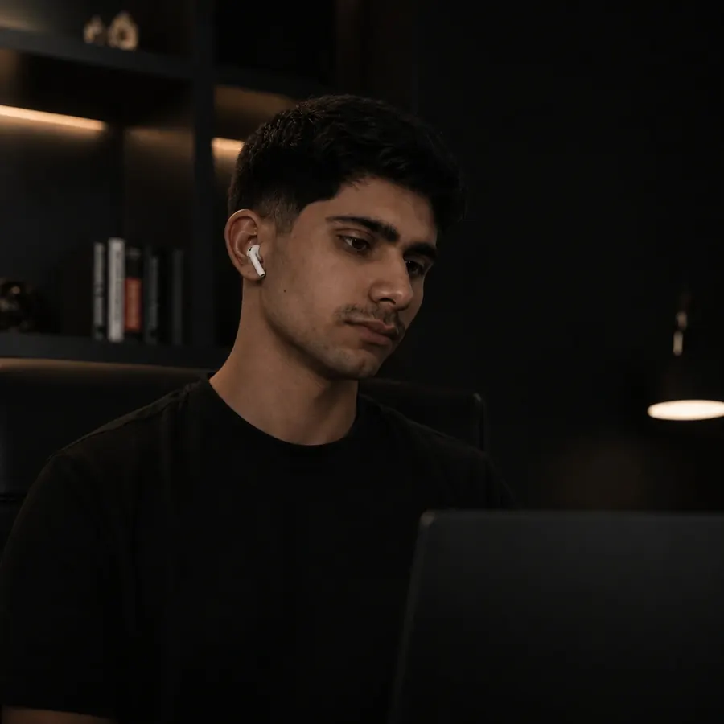

O visitante entra e sai sem agir
Sem um caminho claro, ele não sabe o que fazer depois de ler. A página precisa mostrar o próximo passo logo de cara.
A AmaroNext cria landing pages e sites institucionais rápidos, claros e pensados para o celular, para quem investe em anúncios e precisa de uma página que convença.
Conversa direta comigo, sem formulário e sem compromisso.
Quando o anúncio funciona e a página não, o dinheiro do tráfego se perde no meio do caminho.
Sem um caminho claro, ele não sabe o que fazer depois de ler. A página precisa mostrar o próximo passo logo de cara.
Você paga pelo clique, e é a página de destino que decide se ele vira um contato ou vai embora.
Uma página com cara de amadora afasta o cliente antes de ele ler a oferta. A primeira impressão pesa muito.
O visitante quer saber o que você resolve para ele. Texto direto ajuda a decidir mais rápido.
Dois formatos, cada um com um objetivo bem definido.
Uma página com um único objetivo: levar quem veio do anúncio a chamar você no WhatsApp.
Para apresentar sua empresa com credibilidade: serviços, quem somos e contato em um só lugar.
Cada bloco existe por um motivo: ajudar o visitante a entender a oferta e a chamar você.
Em poucos segundos o visitante entende o que você oferece e para quem.
Informações objetivas que respondem às perguntas mais comuns antes do contato.
Botão fixo no celular, com mensagem pronta para a conversa começar rápido.
Quem clica no anúncio não espera: imagens otimizadas e código enxuto.
Um processo simples, com você acompanhando cada etapa.
Você conta sobre o negócio e o que quer vender. Sem formulário.
Alinhamos objetivo, conteúdo e prazo, e você recebe uma proposta clara.
Você vê a página tomando forma e pede os ajustes que precisar.
Publicação e conferência no celular e no computador para tudo funcionar.

Bernardo Amaro, fundador da AmaroNext
Sou desenvolvedor e crio landing pages pensadas para transformar visitantes em contatos. Acompanho cada projeto de perto, do briefing à publicação, com um processo direto e sem rodeios.
Antes de desenhar qualquer coisa, faço uma pergunta: o que vai levar esse visitante a agir agora? É a partir dela que a página é construída.
@bernardoamaro_O valor depende do tamanho do projeto e do que a página precisa ter. Chame no WhatsApp, conte sobre o seu negócio e envio uma proposta com valor e prazo.
O prazo varia conforme o projeto e é combinado na proposta, antes de começarmos.
Não precisa ter tudo. Na conversa inicial entendo o seu negócio e ajudo a organizar o conteúdo da página.
Sim. Todo projeto é desenhado primeiro para o celular e depois adaptado para tablet e computador.
Conte sobre o seu negócio pelo WhatsApp e receba uma proposta.
Pedir orçamento no WhatsApp(54) 99674-0885